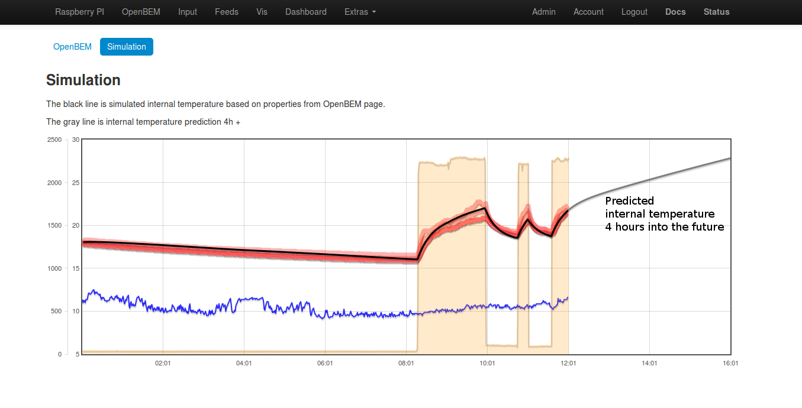
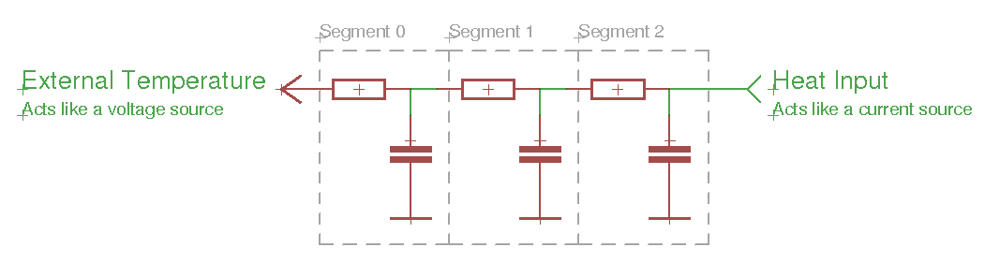
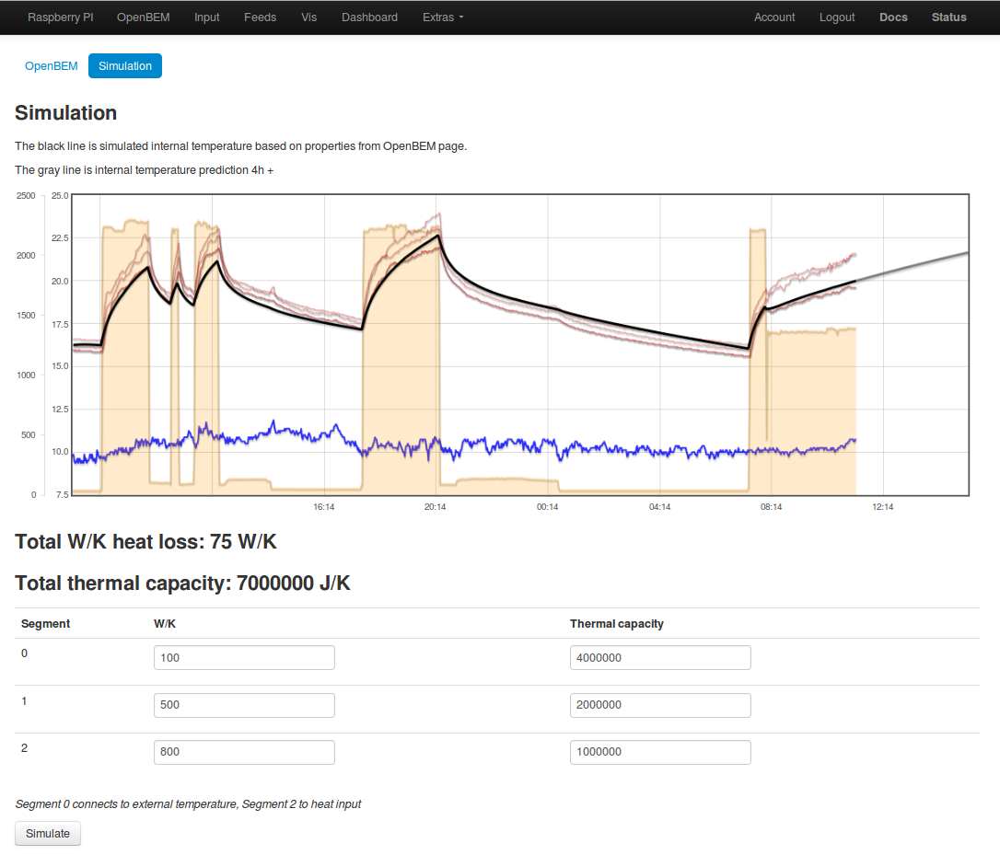
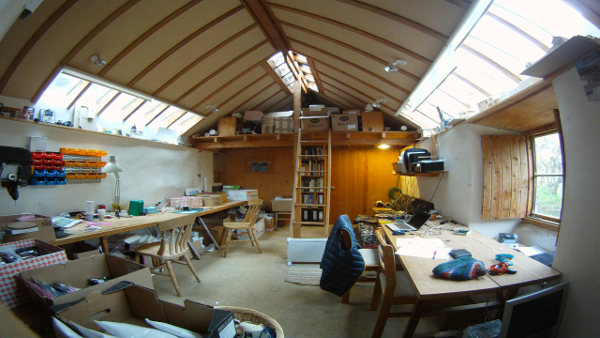

Been making good progress on this building energy modeling idea, both on developing a simpler interface to replace the SAP model I blogged about before and on the idea of integrating actual measured data from realtime temperature and power monitoring.
This screenshot shows modeled internal temperature (black line) overlayed on 4x low power temperature node feeds that show the temperature distribution in the lab. The modeled internal temperature is calculated from the actual outdoor temperature, the actual power feed data (2.2kW heater) and estimated properties for heat capacity of the walls, air+surfaces and heat loss through walls, windows and infiltration.

The code so far is up on github here: https://github.com/emoncms/openbem, the openbem interface is not editable yet, everything is hard coded in javascript, its not actually editable in the browser yet. Feed id's are also hardcoded for the simulation page.
The model type is a 2 stage resistor-capacitor model, using the resistor-capacitor analogy for thermal modelling is a standard approach used in many thermal models, there's an interesting page on it here: http://lpsa.swarthmore.edu/Systems/Thermal/SysThermalModel.html
The lab is quite a simple test case, its a single room, quite small with a small electric heater for heating, its also an overcast day today so solar gain contribution is small. How this will carry over to more complex situations, other seasons, and all the other potential variables is of course an open question, No doubt it will take a lot more work to make it a useful tool but I think its a promising start.
If it can be made to work for different buildings, heating systems etc this could have some interesting application in intelligent heating control as well as building performance characterisation, exciting!
Its interesting the difference of adding the 2nd stage to the resistor capacitor model, Il write-up on that next.
Re: OpenBEM Buiding temperature modelling
Improved the simulation code to allow for a 3 stage RC model and in-browser constant editing.
This is how the resistor-capacitor analogy of the model looks like:

Heat input via the heater acts like a current source into the circuit, the external temperature acts as a constant voltage.
Another screenshot of it in action with the constants table below:

One interesting outcome of this is that its appears that the temperature decay curves cant be described by a single exponential decay curve and are instead a superposition of exponential decay curves with different decay rates.
The code for the module is all up on github here: http://github.com/emoncms/openbem
The simulation script is this one:
https://github.com/emoncms/openbem/blob/master/graph.php
Re: OpenBEM Buiding temperature modelling
For an idea of what kind of building the above data is from here's a pic (the pic is taken with a wide angle lens to take it all in, it doesnt actually curve like that). The floor area is 21m2, walls are 600mm thick stone with plaster on hard, 100mm insulation in roof, roof lights, solid floor.

Re: OpenBEM Buiding temperature modelling
Great work guys, it has been really interesting reading your notes and following progress. Thanks for all the modelling! ^_^